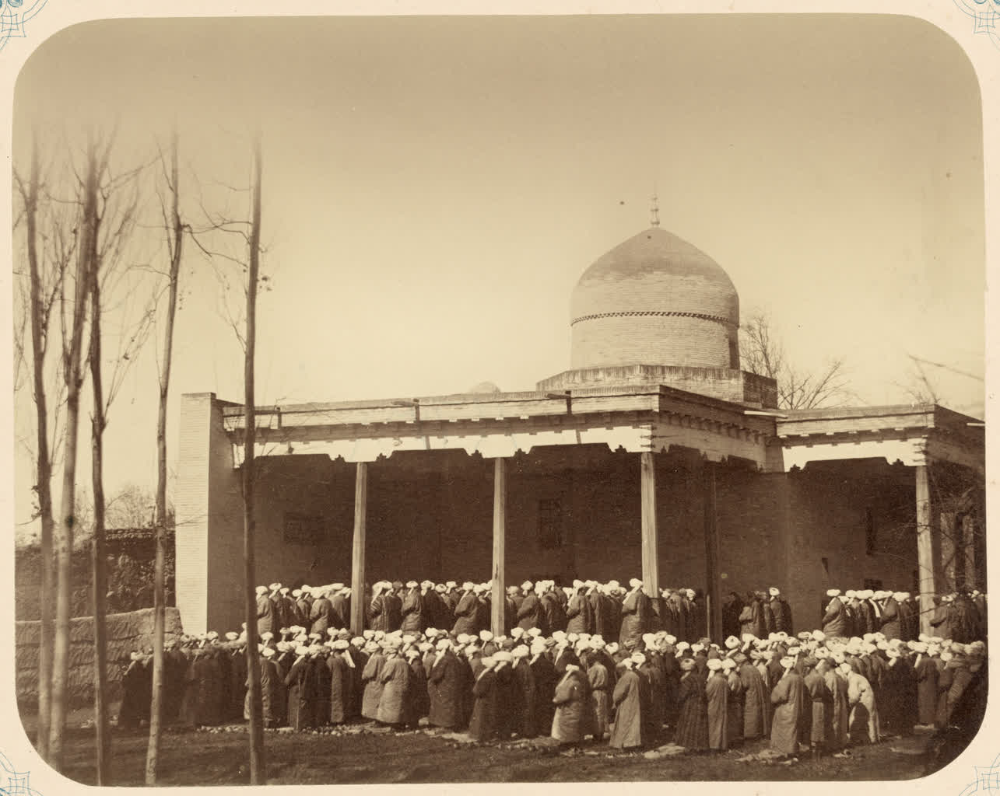

How the five daily prayers work: times, rakʼats and the basic rules
Prayer (salah) is one of the five pillars of Islam and is performed five times a day: Fajr (dawn), Zuhr (midday), Asr (afternoon), Maghrib (sunset) and Isha (evening). Below, the number of rakʼats for each (in the common Hanafi reckoning the obligatory counts are 2 Fajr, 4 Zuhr, 4 Asr, 3 Maghrib, 4 Isha), the preconditions of prayer (ablution, qibla, covering, time) and the core components of a rakʼat (takbir, standing and Al-Fatiha, bowing, prostration, sitting/tashahhud, the concluding salam) are described as a reference. This describes the mainstream Sunni/Hanafi practice; the information is based on reputable sources.

Prayer (Arabic salah) is one of the five pillars of Islam — a form of worship performed by adult Muslims at five prescribed times each day. Below, the times of the five daily prayers, the number of rakʼats for each, the conditions for praying and the core parts of a single rakʼat are explained strictly on the basis of reputable reference sources. The text describes how it is performed in practice; the aim is educational and neutral, and it does not issue religious rulings.
The five prayers and their times
The five obligatory prayers are tied to the following times: Fajr — from dawn until sunrise; Zuhr — after the sun passes its zenith at midday; Asr — later in the day, after Zuhr; Maghrib — just after sunset; Isha — in the evening, once the twilight has faded. Each prayer has its own time window and is performed within it. Because the times depend on the position of the sun, the same criteria apply regardless of place or season.
Number of rakʼats (obligatory, in the Hanafi reckoning)
A rakʼat is a repeated unit of prayer (a cycle of standing, bowing and prostrations). The number of obligatory (fard) rakʼats is: Fajr — 2, Zuhr — 4, Asr — 4, Maghrib — 3, Isha — 4. This is the mainstream Sunni reckoning and is accepted in the same way among Hanafis. The fard is the core portion required of every Muslim; sunnah and nafl rakʼats may be added to it.
Sunnah and nafl rakʼats
Beyond the fard there are also regularly performed sunnah (sunan ar-rawatib) rakʼats; in the traditional arrangement their number is given as 12: 2 before Fajr, 4 before Zuhr and 2 after, 2 after Maghrib, 2 after Isha. In addition, nafl (voluntary extra) prayers may be performed. The number and arrangement of sunnah and nafl rakʼats differ between sources and schools.
Conditions of prayer
Several conditions are met before prayer: ablution (wudu) — performing ritual washing before prayer, with a full bath (ghusl) when required; qibla — facing the Kaaba in Mecca; covering the body (awrah); and the prayer time having begun. The place and clothing are also required to be clean. Once these conditions are met, one forms the intention and enters the prayer.
The core parts of a rakʼat (the rukns)
A rakʼat consists of the following parts in sequence: the opening takbir — entering the prayer by raising the hands and saying 'Allahu akbar'; qiyam — standing to recite Al-Fatiha and additional Qurʼanic verses; rukuʼ — bowing at the waist; after rising, two prostrations (sajda) — a position in which the forehead, nose, palms, knees and toes touch the ground; and, after the set number of rakʼats, the sitting (qaʼda) reciting the tashahhud. The prayer ends with the salam — turning the head to the right and left in greeting. This cycle repeats according to each prayer's number of rakʼats.
The Friday (Jumuʼah) prayer
On Fridays the Jumuʼah prayer is performed in place of the Zuhr prayer: it is 2 rakʼats, performed in congregation after a sermon (khutbah). The Friday prayer is specific to that day and is usually performed in the mosque in congregation. The other four prayers remain as they are.
The witr prayer
Witr is a night prayer with an odd number of rakʼats; the number may range from one up to several. The schools differ on its ruling: the Hanafi school treats it as wajib (a strong requirement), while other schools consider it sunnah (recommended). For that reason its exact arrangement is described according to the source.
Congregational prayer
Prayer may be performed alone or in congregation (with others). In congregation one person acts as the imam and stands in front, and the others follow him in rows. Congregational prayer, especially in the mosque, is a widespread practice and may be performed for each of the five daily prayers.
Exemptions and concessions
In some situations a concession is granted in prayer: traditional sources state that during travel, illness or similar special circumstances certain prayers may be shortened or postponed within a defined limit. Those who cannot perform the movements fully are described as praying according to their ability (for example sitting or with a gesture). The exact rules and the scope of the concessions differ by school and source.